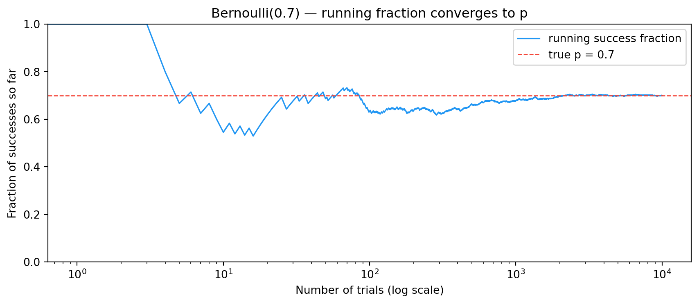

5.1 An Applied Scenario — One Reading from a Vibration Sensor
A factory motor has an accelerometer bolted to its housing. Every millisecond, the sensor reports a vibration amplitude in g (units of gravity). Most of the time the reading sits inside the normal operating band — say, between -2\,\mathrm{g} and +2\,\mathrm{g}. Occasionally, a transient impact pushes it above +2\,\mathrm{g}.
You set up a simple condition monitor: for each new sample, mark it 1 if it exceeds +2\,\mathrm{g}, else 0.
That single observation — did this sample cross the threshold? — is the smallest possible random event. There are exactly two outcomes. There is one number that controls how often you see a 1: the probability that any given sample is a transient.
You now have everything you need to define the simplest distribution in probability.
5.2 Intuition
The atom of all the randomness we’ll study is this: something either happens or it doesn’t.
A vibration sample either crosses the alarm threshold or it doesn’t (condition monitoring)
A motor bearing either fails on a given day or it doesn’t (reliability)
A photon either gets absorbed by a sensor pixel or it doesn’t (image sensor physics)
A coin lands heads or tails
This binary event is called a Bernoulli trial. It has exactly one parameter: the probability of “success”, p. (“Success” just means the event you’re counting — a threshold crossing, a fault, an absorbed photon.)
X \sim \text{Bernoulli}(p) \quad \Rightarrow \quad
X = \begin{cases} 1 & \text{with probability } p \\
0 & \text{with probability } 1-p \end{cases}
The mean tells you the long-run fraction of 1s. The variance is largest at p = 0.5 (maximum uncertainty) and shrinks to 0 as p approaches 0 or 1 (the outcome becomes predictable).
Note▶ Show the math — Why E[X] = p and \operatorname{Var}(X) = p(1-p)
By definition of expectation for a discrete random variable:
For the variance, use \operatorname{Var}(X) = E[X^2] - (E[X])^2. Since X \in \{0, 1\}, we have X^2 = X, so E[X^2] = E[X] = p:
\operatorname{Var}(X) \;=\; p - p^2 \;=\; p(1-p).
The function p(1-p) peaks at p = 1/2 (value 1/4) and is zero at both endpoints — encoding the fact that a maximally fair coin is the most uncertain Bernoulli, and a coin that always lands the same way has no variance at all.
5.3 Back to the Vibration Sensor
For the motor scenario, suppose calibration runs show that on a healthy machine, roughly 1 sample in 200 crosses +2\,\mathrm{g} from ambient noise alone. That fixes the parameter:
p \;=\; \frac{1}{200} \;=\; 0.005.
Each new millisecond is one Bernoulli trial with p = 0.005. The stream of 0s and 1s coming out of the threshold check is a sequence of independent Bernoulli outcomes — provided the machine state isn’t changing.
This is already useful on its own: if you start seeing 1s at a rate much higher than 0.005, something has changed. But to quantify “much higher” you need to count successes over a window of n samples — and that’s the Binomial distribution (next chapter).
5.4 Simulation: a single Bernoulli experiment
We’ll start with a slightly larger p so the effect is visible in a short run. Pretend each trial is a CMOS pixel checking whether an incident photon is absorbed (quantum efficiency p = 0.7).
import numpy as npimport matplotlib.pyplot as plt# Each cell in this chapter is self-contained — re-init the RNG so# Quarto's per-cell caching cannot lose the state of upstream cells.rng = np.random.default_rng(seed=42)quantum_efficiency =0.7# p — probability of "success" per trialnumber_of_trials =20# could be 20 pixels, 20 sensor samples, …# Each trial: did it succeed? (1 = yes, 0 = no)trial_outcomes = rng.integers(0, 2, size=number_of_trials)# Override with biased trials so we can use p ≠ 0.5:trial_outcomes = (rng.random(number_of_trials) < quantum_efficiency).astype(int)print(f"Success probability (p): {quantum_efficiency}")print(f"Number of trials: {number_of_trials}")print()print(f"Each trial's result: {trial_outcomes}")print(" 1 = success (electron produced / pixel above threshold / etc.)")print(" 0 = failure")print()print(f"Total successes: {trial_outcomes.sum()} out of {number_of_trials}")print(f"Success rate this run: {trial_outcomes.mean():.0%}")print(f"Expected successes (n × p): {quantum_efficiency * number_of_trials:.1f}")
Success probability (p): 0.7
Number of trials: 20
Each trial's result: [1 0 1 0 1 1 1 1 0 1 0 1 0 0 0 1 1 1 1 1]
1 = success (electron produced / pixel above threshold / etc.)
0 = failure
Total successes: 13 out of 20
Success rate this run: 65%
Expected successes (n × p): 14.0
Run this conceptually a few times. The sequence changes every run, but the total count hovers near n \cdot p = 14. That’s the law of large numbers in miniature: a single trial is unpredictable, but the average behaviour is locked in.
5.5 Watching the law of large numbers happen
Let’s actually plot the convergence. We flip the same biased coin (here p = 0.7) ten thousand times and watch the running success fraction settle.
import numpy as npimport matplotlib.pyplot as pltrng = np.random.default_rng(seed=0)p =0.7n_trials =10_000trials = (rng.random(n_trials) < p).astype(int)running_fraction = np.cumsum(trials) / np.arange(1, n_trials +1)fig, ax = plt.subplots(figsize=(9, 4))ax.plot(running_fraction, color="#2196F3", lw=1.2, label="running success fraction")ax.axhline(p, color="#F44336", ls="--", lw=1, label=f"true p = {p}")ax.set_xscale("log")ax.set_xlabel("Number of trials (log scale)")ax.set_ylabel("Fraction of successes so far")ax.set_title("Bernoulli(0.7) — running fraction converges to p")ax.set_ylim(0, 1)ax.legend()plt.tight_layout()plt.show()

Three things to notice:
The first handful of trials are wild — the running fraction jumps between 0 and 1 because the denominator is tiny.
By a few hundred trials the fraction is already locked in around p = 0.7.
It never settles exactly. The wobble around the true value gets smaller as n grows, but never disappears — that’s what convergence looks like in finite samples.
This is the same picture you saw in the coin-flip plot from What is Probability? — we’re just generalising from p = 0.5 to arbitrary p.
5.6 Where Else Bernoulli Trials Appear
The same atom shows up across signal processing and ML wherever a single binary decision is made:
Domain
What’s the trial?
What’s p?
Vibration monitoring
One sample crosses alarm threshold
Probability of a transient per sample
Audio VAD
One frame contains speech
Speech-active fraction
Image sensor (CMOS)
One photon produces a detectable electron
Quantum efficiency, QE
Image thresholding
One pixel exceeds intensity T
Fraction of “bright” pixels
Binary classifier
One input is classified as positive
Class prior × model accuracy
Reliability
One unit fails in its first year
Annual failure probability
TipThe cleanest physical Bernoulli trial in nature
A CMOS photosite converts photons to electrons via the photoelectric effect. The sensor’s quantum efficiency (QE ≈ 0.4–0.9 for modern silicon) is literally a Bernoulli probability:
\text{QE} \;=\; p \;=\; \frac{\text{electrons produced}}{\text{photons incident}}.
Each incident photon is one independent trial. We’ll lean on this in later chapters because the physics gives us an exact p to work with.
5.7 What “Bernoulli” really requires — three conditions, not one
A common slip is to call any binary process Bernoulli. The full definition has three requirements:
Two outcomes — every trial produces exactly one of two results.
Independence — the outcome of one trial gives you no information about any other.
Constant probability — the success probability p is the same in every trial.
Drop any one and it stops being a Bernoulli process — even though the “success/failure” label still fits.
WarningCounterexamples: binary, but not Bernoulli
Drawing cards without replacement. Success = “drew a heart”. First draw: P = 13/52 = 0.25. After a heart, second draw: P = 12/51
\approx 0.235. Probability changes with history → independence fails. This is thehypergeometricdistribution. (With replacement, it’s Bernoulli again.)
Tomorrow’s weather. Success = “rains today”. Rain today makes rain tomorrow more likely — trials are correlated. This is closer to aMarkov chain.
A drifting factory. A machine starts the shift calibrated (p = 0.99) and drifts as it heats up (p \to 0.95). Trials are independent but p changes over time. This is anon-homogeneous binary process.
Pólya’s urn. Urn has 1 red and 1 blue ball; after each draw, put the ball back plus one more of the same colour. Each draw shifts the probabilities for future draws. Not independent, p not constant — not Bernoulli.
The success/failure structure is necessary but not sufficient. All three conditions matter.
5.8 Why this distinction matters in ML
You’ll meet this constantly:
Logistic regression assumes each label y_i \in \{0, 1\} is conditionally Bernoulli given features x_i — but p_i varies with x_i. So labels are independent Bernoullis with different p — not a single Bernoulli process. Statisticians call this Bernoulli with covariates.
Bandit problems are usually modelled as IID Bernoulli rewards per arm. Independence is the key assumption that makes the standard regret bounds work.
Time-series binary data (clicks, defects per minute) typically violate independence and need Markov or autoregressive models.
Knowing whether your data satisfies all three conditions tells you which tools you can use and which will give you wrong answers.
5.9 Key Insight
Each 1 in a Bernoulli stream is one event — one threshold crossing, one absorbed photon, one positive classification. On its own, a single trial tells you almost nothing. What you actually care about is the count of successes over many trials: how many transients in a 1-second window, how many electrons from a 10 ms exposure, how many positive predictions in a batch.
Counting Bernoulli successes is exactly what the Binomial distribution does — and that’s the next chapter.
5.10 Exercises
Variance check. Simulate N = 100{,}000 Bernoulli trials at each of p \in \{0.1, 0.3, 0.5, 0.7, 0.9\}. For each, compute the sample variance of the trial outcomes and compare to the theoretical p(1-p). Plot both as a function of p.
Convergence rate. For p = 0.5, generate Bernoulli trials and plot how the gap between the running fraction and p shrinks with n. Use a log–log axis. The slope should be roughly -1/2 (you’re seeing the 1/\sqrt{n} rule that the CLT will explain formally later).
Spot the non-Bernoulli. For each scenario below, identify which of the three Bernoulli conditions fails:
Asking 5 friends in a row whether they’ll come to a party.
Drawing 5 marbles from a bag of 10 red and 10 blue, no replacement.
Whether a server is up at one-minute intervals throughout the day.
Logging whether each photo in a face-detection benchmark is correctly classified.